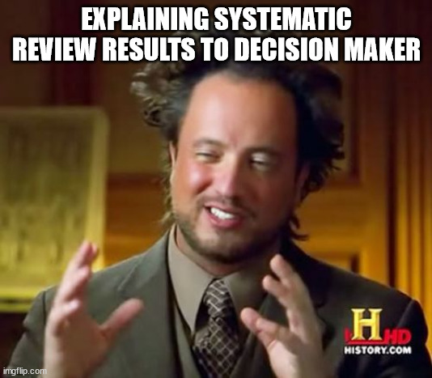
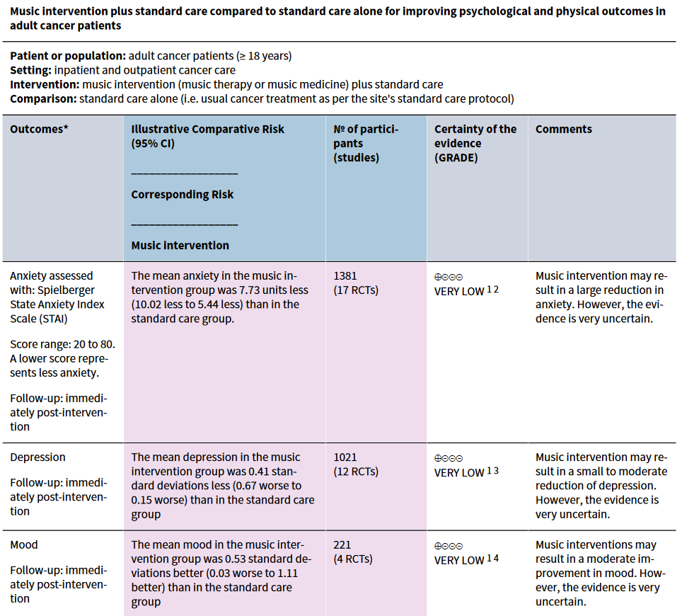
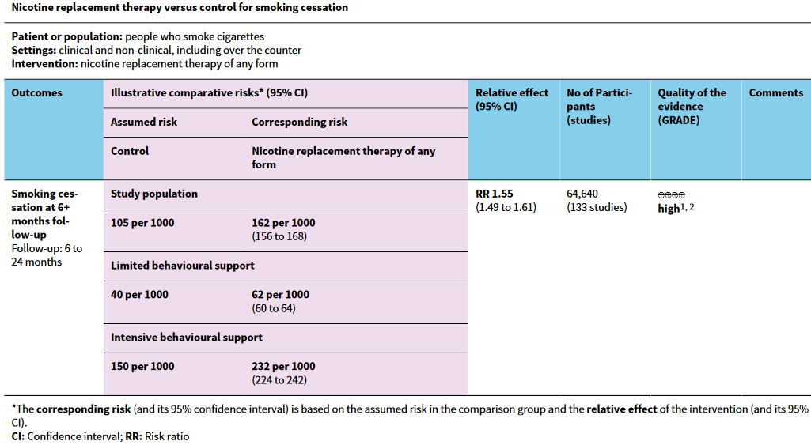
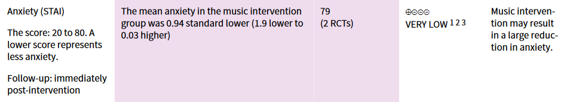

10 Quality of Evidence and Reporting
It is important to present the results of a systematic review and meta-analysis in a user-friendly and transparent way for knowledge users and decision-makers. Summary of findings tables have been developed by the Cochrane Collaboration as a standard format for summarize knowledge synthesis results. Such tables should incorporate a rating of the certainty in evidence for each specific outcome assessed in the review. The Cochrane Collaboration has developed an approach called GRADE (Grading of Recommendations Assessment, Development and Evaluation) to assess the certainty (or quality) of evidence for outcomes in a systematic review.

10.1 Summary of Findings Tables and Review Reporting
Summary of findings tables are required for all reviews conducted through the Cochrane Collaboration. They present the main findings of the review in a user-friendly, tabular format, and appear as part of the executive summary of the review report. The concept of summary of findings tables applied to any review, and such a table can be included in non-Cochrane reviews as well. The Cochrane Collaboration requires that summary of findings tables include only the most important outcomes of the review, limited to no more than seven.
The general template for a summary of findings table is as follows:
- Description of population and setting of available evidence and the comparison groups (at the top of the table).
- List of the most important outcomes (as separate rows in the table).
- For each outcome the table, a measure of the typical burden, relative magnitude of effect, number of participants and studies, and certainty of evidence (as separate column for each outcome).
- The final column includes overall comments, and explanations (footnotes) should be added as needed at the bottom of the table.
The Cochrane Collaboration has created an online software called GRADEpor GDT to create summary of findings tables. The software is currently free for groups of up to three researchers.
10.1.1 Statistical Considerations
Meta-analysis is typically conducted using relative measures of effect (e.g., risk ratio, odds ratio) because these are more consistent across studies than absolute measures (e.g., risk difference). However, for the summary of findings table, the effect for each outcome should be presented as both a relative and absolute effect. To determine an absolute effect from a meta-analysis estimate, we require an estimate of the assumed comparator risk (ACR). The ACR refers to the risk of the outcome in the comparison (or control) group (that does not receive the intervention).
There are different methods to calculate an ACR for each outcome. One option is to take the median value of the risk of the outcome among participants in the control groups of studies included in the review. However, if there is significant variation in the control group risk among studies in the review, then another option is to select two representative values for high and low risk groups. This could be the second highest and second lowest risks among the included studies for that particular outcome. A corresponding intervention risk can then be calculated using the relative measure of effect from meta-analysis and the ACR. For dichotomous outcomes, such risks are generally presented as a risk per 1000 (or 100) people. The formulas to calculate this risk for risk ratio (RR) and odds ratio (OR) outcomes are shown below. In both cases, the lower and upper 95% confidence limits can be calculated by replacing the RR or OR value with its lower and upper confidence limits, respectively.
\[ \text{Corresponding intervention risk per 1000} = 1000\times ACR\times RR \]
\[ \text{Corresponding intervention risk per 1000} = 1000\times \left(\frac{OR\times ACR}{1-ACR+ \left( OR\times ACR \right)} \right) \]
For time-to-event outcomes, measured using a hazard ratio (HR), there are three methods of calculating the corresponding intervention risk. The first calculates the absolute risk of event-free survival within a particular time period, the second calculates the absolute risk of an event within a particular time period, and the third calculates the median time to the event (in months or years). The formulas for calculating these risks are as follows:
\[ \text{Corresponding intervention risk per 1000} = 1000\times e^\left[\ln(\text{proportion of event-free participants})\times HR \right] \]
\[ \text{Corresponding intervention risk per 1000} = 1000\times e^\left[\ln(1-\text{proportion of event-free participants})\times HR \right] \]
\[ \text{Corresponding median survival time} = \frac{\text{comparator group median survival time}}{HR} \]
For continuous outcomes (e.g., SMD), the corresponding intervention risk is usually the mean difference or SMD and CI of the meta-analysis estimate.
10.1.2 Summary of Findings Table Contents
Each row in a summary of findings table reflects one of the pre-selected, most important outcomes (up to seven). For each outcome, you should provide the measurement scale (if applicable) and the measurement time frame (e.g., length of follow-up). Outcomes that were pre-selected but that had no data available from the studies in the review should still be included in this table.
The first column in the table will be the list of outcomes. The second column is the ACR and the third is the corresponding intervention risk. The relative effect and CI (e.g., RR, OR) is presented in the fourth column (this column is not required for continuous outcomes). The final three columns include data on the number of participants and studies included for each outcome, the GRADE rating, and any comments.
An example of a summary of findings table from a systematic review of music interventions to improve various health outcomes in people with cancer is shown below (Bradt et al. 2021). In this review, separate summary of findings tables were created for evidence in two main population groups (adult cancer patients and pediatric cancer patients). The example below shows the first three outcomes from the adult cancer patient table.

In this table, footnote 1 indicates that all outcomes were downgraded two levels in the GRADE assessment for high risk of bias (because participants could not be blinded to the music intervention and the outcomes were measured using self‐report). The outcomes shown above were also downgraded 1-2 levels due to inconsistency because of high levels of heterogeneity in estimates.
Another example of a summary of findings table showing illustrative comparative risks is provided below, from a systematic review about the effectiveness of nicotine replacement therapy vs. control for smoking cessation (Hartmann‐Boyce et al. 2018).

The footnotes in this table indicated that most studies were “judged to be at unclear or high risk of bias, but restricting to only studies at low risk of bias did not significantly alter the effect”. Additionally, while some publication bias was expected, results were not likely to change significantly due to this.
In a systematic review that assessed the association between long-term exposure to residential green spaces and mortality in adults (Rojas-Rueda et al. 2019), the authors found that the pooled hazard ratio (HR) for green space exposure on all-cause mortality was 0.96 (95% CI: 0.94 to 0.97). Green space exposure was defined as a 0.1 increment in NDVI (normalized difference vegetation index) in a residential buffer zone of 500 m or less.
- Assuming a proportion of event-free participants of 0.9 (90%) over 10 years, what is the absolute risk of event-free survival within this time period? Calculate for the HR and its 95% CI.
- Examine the details of the studies contributing to the meta-analysis in this review see Table 1 and Figure 2 here. Draft a mock summary of findings table for this outcome. What other details would you include in the table? (Disregard the GRADE rating column for now).
10.2 Certainty of Evidence Assessment
The Grades of Recommendation, Assessment, Development and Evaluation Working Group has developed a certainty of evidence assessment approach for systematic reviews called GRADE, which has been adopted by the Cochrane Collaboration. GRADE is applied to each outcome in a systematic review, and determines the level of confidence that the calculated measure of effect or association (from meta-analysis) represents the true effect. There are four possible GRADE ratings: high, moderate, low, and very low.
Studies begin at a high rating and can be rated down based on five criteria. In intervention reviews, non-randomized studies are typically rated down to a low rating automatically due to risks of bias. There are also three possible criteria that can increase the GRADE rating. The criteria are described below.
10.2.1 Risk of bias
The risk of bias of individual studies contributing to a specific outcome can affect our confidence in that outcome. This criterion uses the risk-of-bias judgement from the Cochrane RoB Tool for RCTs or from the ROBINS-I/ROBINS-E for observational studies (as applicable). When most of the evidence comes from studies that have a crucial limitation (high risk of bias) for one risk-of-bias item, or some concerns for multiple items, the certainty of evidence can be downgraded by one level. In severe cases, certainty can be downgraded by two levels.
10.2.2 Inconsistency
This criterion aims to assess the extent of inconsistency or heterogeneity in the estimate of effect that is unexplained after investigating subgroup and meta-regression analyses. Inconsistency can be measured using \(I^2\), \(\tau\), and/or prediction intervals, as previously covered in the Chapter 8 session. If heterogeneity in the estimate is considered substantial or important, and there are no identified explanations for the heterogeneity, then consider downgrading by one level.
10.2.3 Indirectness
This criterion assesses whether the studies contributing evidence to a particular outcome do not directly match with the review question’s population, intervention/exposure, comparison, or outcome. For example, if in a systematic review about the effectiveness of food handler education and training interventions (Young et al. 2019), studies were considered to provide indirect evidence on the population if their participants included a mix of food handlers (working in the food service industry) and consumers who cook food at home. The same principle applies to the other PICO/PECO elements. It might be appropriate to downgrade if most of the evidence for an outcome has indirect measurement of one or more PICO/PECO elements.
10.2.4 Imprecision
If there is sufficient uncertainty about the magnitude and direction of the meta-analysis estimate, one can rate downgrade for imprecision. In the most recent suggested approach to this criterion (Schünemann et al. 2022), it is recommended to pre-identify key thresholds for what is a considered a small, moderate, or large effect for the outcome of interest. This imprecision assessment and the threshold should be on the absolute scale, so should use the corresponding intervention risk approach as described above. Then determine if you expect the meta-analysis effect will lie between two thresholds or beyond a threshold (e.g., small or greater). This is the target rating of the uncertainty.
The next step is to assess whether the CI for the corresponding intervention risk crosses one or more threshold boundaries, and downgrade a number of levels for each threshold crossed. For example, if we set our target at detecting a small or greater effect, and the effect was moderate but the CI also include the null (zero effect), evidence would be downgraded one level for crossing below the “small” threshold.
For continuous outcomes, one can use the well-defined SMD thresholds of small = 0.2, moderate = 0.5, and large = 0.8 (Schünemann et al. 2022). If analyzing a raw mean difference, one should use established thresholds for the outcome scale (if there are any), otherwise you can re-express the outcome as a SMD for the purposes of conducting the imprecision rating.
Note that when conducting random-effects meta-analysis, high heterogeneity can also cause imprecision (wide CIs), so authors may need to consider this and may decide to rate down only for inconsistency and not for imprecision (especially if the total number of participants across included studies is reasonably large). For example, to detect a SMD of at least 0.2, a sufficient sample size will often be 800 (400 per comparison group) (Schünemann et al. 2022).
10.2.5 Publication bias
The final downgrading criterion relates to possible publication bias. This criterion can be informed by a separate risk-of-bias assessment for missing data, as described in Chapter 5, to determine the extent that additional studies might have been excluded from the meta-analysis because they were not published. Evaluation of meta-analysis funnel plots and publication bias tests (if appropriate) can also inform this criterion.
10.2.6 Upgrading criteria
There are three possible criteria that could lead to increasing the GRADE rating for an outcome: large effect, dose response, or all plausible confounding and bias would reduce (rather than increase) the effect. However, it is rare that the evidence will meet the necessary criteria to be upgraded based on any of these factors.
Large effects: If evidence predominantly comes from well-conducted, low risk of bias studies and the effect estimate is large (e.g., RR>2 or <0.5), one could consider upgrading.
Dose-response: The presence of a dose-response gradient for the effect can increase confidence and certainty in the effect, potentially warranting upgrading.
Plausible confounding: Sometimes all plausible confounding factors would be expected to under-estimate the apparent effect estimate, which increases our confidence that the actual effect should be larger than what is reported.
An example of GRADE rating from a summary-of-findings table in systematic review of music interventions to improve various health outcomes in people with cancer is shown below (Bradt et al. 2021). This GRADE rating and explanation is shown for effects of the intervention on anxiety levels in pediatric patients.

In this GRADE assessment, footnote 1 indicates the evidence was downgraded two levels for high risk of bias. The two trials were at high risk of bias because participants could not be blinded to the music intervention and outcome was measured using self-report. Footnote 2 indicates that evidence was downgraded one level for serious inconsistency across studies as evidenced by \(I^2 = 76\%\). Footnote 3 indicates that evidence was downgraded two levels for imprecision due to a small number of participants (from only two trials).
Using the systematic review of the association between long-term exposure to residential green spaces and mortality in adults (Rojas-Rueda et al. 2019), as investigated in the earlier exercise, we will now attempt to conduct a GRADE evaluation of the evidence contributing to the main all-cause mortality outcome.
- Review the article, including tables and figures, and come up with a proposed GRADE assessment for each of the five downgrading criteria. Note that you will need to examine the supplementary material for detailed results of the risk-of-bias and publication bias assessments.
- Based on the information available, would you consider upgrading any levels based on the upgrading criteria?
- What is your proposed overall GRADE rating for this outcome?